3221 1213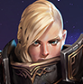
322 1 231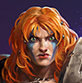
111 1 2222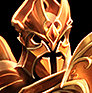

| Tier 1 | |||||
| 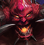 | Johanna 3221 1213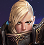 | 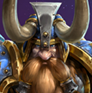 | |||
| 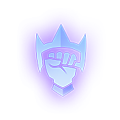 | 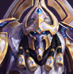 | Sonya 322 1 231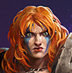 | Padrão: 111 1 2222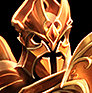 | 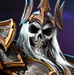 | 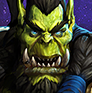 |
| 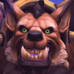 | 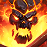 | ||||
| 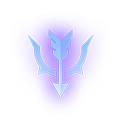 | 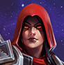 | ||||
| 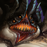 | 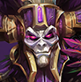 | 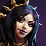 | 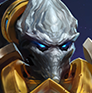 | ||
| 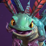 | 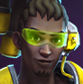 | |||
| Tier 2 | |||||
| 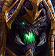 | 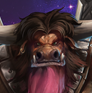 | 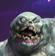 | 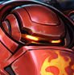 | 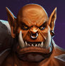 | |
| 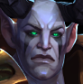 | |||||
| 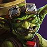 |  | 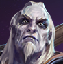 | 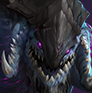 | 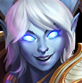 | |
| 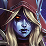 | 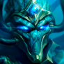 | 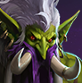 | 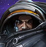 | 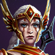 | |
| 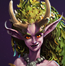 | 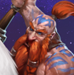 | 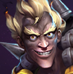 | |||
| 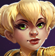 | 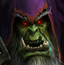 | 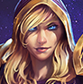 | 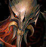 | ||
| 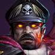 | 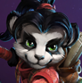 | 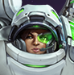 | 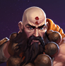 | 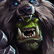 |
| 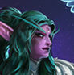 | 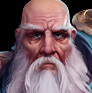 | 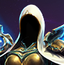 | ||
| Tier 3 | |||||
| 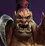 | |||||
 | |||||
|  | ||||
| Counters |
| Mapas |
Anotações |
Sinergias | |
| https://www.youtube.com/watch?v=a2GRY_SfNFI&t=3110s | |
| https://www.youtube.com/watch?v=oxpirv80ihk | |
| Bright pode dar Z no Stitches logo após ele ultar alguém, além disso o Polymorph não da chance pra vítima fugir. O Stitches ganha mais cura com o talento e o Bright cura em porcentagem, beneficia o Diablo. | |
| A cura se torna mais efetiva quanto mais armor o Garrosh tiver. | |
| Garrosh pode jogar o inimigo na armadilha do Junkrat. Qualquer inimigo que pise na armadilha pode ser puxado pelo Junkrat e depois pelo Garrosh. https://www.youtube.com/watch?v=33c9Q4sjCGY&t=613s | |
| | Wombo combo de ultimates. |
| Stiches' Gorge + Anduin's Leap of Faith. | |
| Melhores hospedeiros: Artanis, Dehaka, Tyrael, Valeera. | |